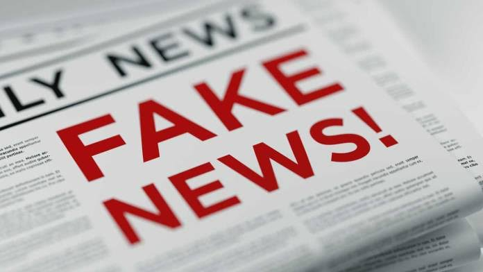
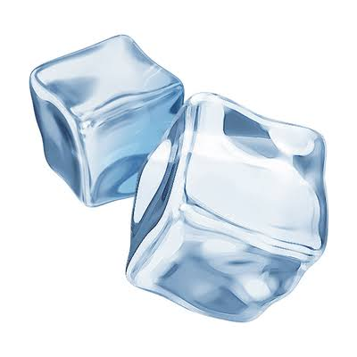
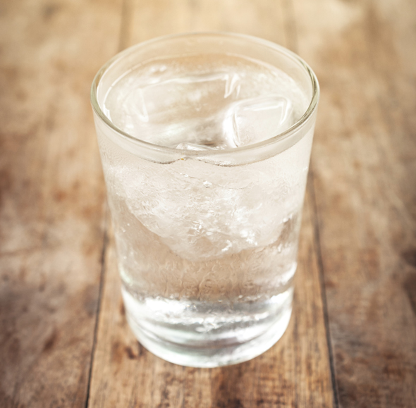
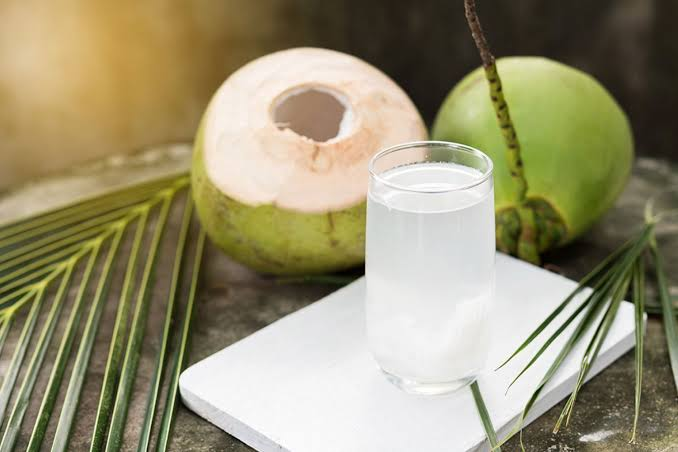

É uma doença que ocorre por conta do desenvolvimento anormal das células da pele. Elas multiplicam-se repetidamente até formarem um tumor maligno. O Câncer de pele é uma doença que tem cura, se descoberto logo no início.
VIDEO DE EXPLICAÇAO ABAIXO:
AS INFORMAÇÕES DO VIDEO ACIMA SÃO COM BASE NO SITE OFICIAL DO INCA
FAKE NEWS

Na internet, são inúmeros os boatos sobre o câncer. Diversas notícias falsas tratam desde supostas vacinas até alimentos milagrosos para cura da doença. Com a popularização de aplicativos de mensagem, a divulgação das chamadas fake news (notícias falsas em inglês) acontece de forma ainda mais rápida e intensa. Porém, acreditar nessas notícias pode trazer graves consequências para pacientes oncológicos, dificultando o tratamento e agravando o já frágil quadro de saúde.
Confira abaixo algumas Fake News:
1- fruta é a cura do câncer - É Fake News!
A notícia é falsa. Não há evidência científica de que comer frutas após as refeições, aquecidas ou cozidas piorem a oferta de nutrientes das frutas. As principais instituições de pesquisa em câncer não realizaram revisões sistemáticas sobre esta questão, o que significa que elas não são um tema importante. Frutas são uma parte essencial de uma dieta saudável. Elas são excelentes fontes de muitos nutrientes importantes. Elas fornecem uma dieta baixa em calorias e rica em fibra, o que contribui para manter um peso saudável. Os efeitos do consumo das frutas na diminuição do risco de câncer são indiretos, por meio da ingestão de fibras e da sua associação com uma dieta hipocalórica. Recomenda-se alternar frutas de diferentes cores para o consumo diário, dando preferência às frutas frescas.
2- Gelo causa câncer - É Fake News!

Não compartilhe essa mensagem! Ela é falsa! Não há nenhum nexo científico nas afirmações. Trata-se de uma afirmativa falsa, não há relação entre consumir gelo em qualquer período do ciclo menstrual e a incidência de câncer.
3- Câncer é deficiência da vitamina B17 - É FAKE NEWS!
O conteúdo da mensagem é falso. O complexo vitamínico B inclui as vitaminas B1, B2, B3, B5, B6, B7, B9 e B12. O complexo vitamínico B é um grupo de nutrientes que exercem importantes funções no organismo. Como são encontradas em vários tipos de alimentos, sua necessidade diária é suprimida com uma boa alimentação. Somente em circunstâncias excepcionais é indicado suplementação dessas vitaminas.
4- Agua Gelada Faz Mal - Fake News

Essa mensagem é falsa! Não compartilhe. Além de atribuir o texto ao Dr. Dráuzio Varella com uma especialidade diferente da dele, o texto contém diversas informações falsas e alarmistas. Essa mensagem já foi desmentida pelo portal Boatos.org, parceiro do Ministério da Saúde no combate às Fake News. O portal esclarece que essa mensagem circula há algum tempo, com pequenas modificações.
5- Água de coco quente é a cura do câncer - FAKE NEWS!

Essa mensagem é falsa! Não compartilhe! Não existe um alimento específico ou milagroso para a prevenção e/ou cura do câncer. Não existem evidências científicas que atribuam tal capacidade a água de coco quente. O que previne o câncer é praticar uma alimentação saudável, manter o peso corporal adequado e praticar atividade física. Uma alimentação saudável e protetora de câncer é composta por alimentos in natura, alimentos minimamente processados e preparações culinárias feitas com esses alimentos. Além disso, uma alimentação saudável também deve ser pobre em alimentos ultraprocessados, que são aqueles prontos para aquecer e consumir, pobre em carnes processadas e sem bebidas alcoólicas.
6- Uso do celular no escuro e câncer de olho - FAKE NEWS
O texto intitulado USO DO CELULAR NO ESCURO está repleto de informações equivocadas e sem comprovação científica. Não existem estudos científicos mostrando que o uso do celular, seja a noite ou durante o dia provoque maculopatia (que o texto erroneamente classifica como câncer no olho), catarata, olho seco, degeneração macular ou perda de visão.